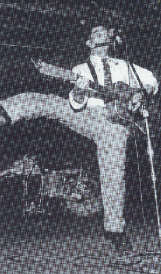

‚Üê Back to MarckBeggs.com | Arkansas Literary Forum archive, preserved as originally published‚Üê Back to MarckBeggs.com | Arkansas Literary Forum archive, preserved as originally published
‚Üê Back to MarckBeggs.com | Arkansas Literary Forum archive, preserved as originally published‚Üê Back to MarckBeggs.com | Arkansas Literary Forum archive, preserved as originally published|
 His writing, photography and drawings have also appeared in the United Kingdom-based magazine "Juke Blues," "Arkansas Times," "Memphis Flyer" and former Arkansas Secretary of State Bill McEuen's short-lived "Gaming Gazette," among other publications. As a freelance writer he has traveled to Egypt, Turkey, Israel, Nevis, the Abacos, Costa Rica, Holland and elsewhere. Koch authored Louis Jordan's biography in the University of Arkansas Press' Arkansas Biography (Spring 2000) and organizes the annual July 7-8 Louis Jordan Tribute held in downtown Little Rock. This event, entering its fifth year, has been recognized by the Library of Congress, the Rock and Roll Hall of Fame and the Department of Arkansas Heritage. Koch is a research associate with the Butler Center for Arkansas Studies and has been a featured speaker/performer on Arkansas music and history at the Rock and Roll Hall of Fame, the Arkansas Historical Association and Arkansas State University's annual Delta Blues Symposium, among other events and conferences. Koch co-hosts "Arkansongs," an Arkansas music-based radio program heard alternate Sundays on KABF 88.3 FM Little Rock, and been a radio announcer for a handful of other Arkansas stations, and has done voice/talent/photography work for a variety of agencies in Arkansas, New Jersey and Florida. He also recently began an Arkansas field recordings project with Keith Merck, his "Arkansongs" co-host, and Grammy-winning musician and documentarian Joe Cripps. Koch's journalistic awards include:
|